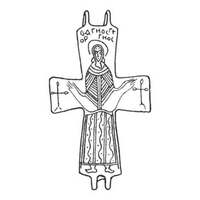

Catalog › CE-0268 · KOR2003-I.2.28
Valvă de revers de encolpion cu sfânt Orantă (Sf. Gheorghe), cruci pe capetele laterale
sec. XI–XII (1001–1200) · loc necunoscut · Muzeul Rus de Stat, Sankt Petersburg (GRM), inv. 8075
single valve of a reliquary cross, aramă; c. XI–XII (1001–1200); find spot unknown; kept at Muzeul Rus de Stat, Sankt Petersburg (GRM).


Identificare
- Categorie
- Valvă izolată
- Material
- Aramă
- Tehnică
- Turnare în relief; Gravare (incizie)
- Dimensiuni
- Î 68 × L 45 mm
Iconografie
- Revers
- Sf. Gheorghe
- Descriere revers
- Valvă de revers de encolpion cu capete dreptunghiulare, ușor lărgite, cu imaginea sculptată a unui sfânt în picioare, în poziție de Orantă, completată cu imagini ale unor cruci pe capetele laterale ale valvei și cu inscripție pe două rânduri deasupra capului sfântului – ОАГНОС ГЕ/ОРГНОС. Veșmântul sfântului este bogat ornamentat cu linii paralele drepte și ondulate, puncte, hașuri oblice.
- Inscripții
- ОАГНОС ГЕ/ОРГНОС
- Limba
- Greacă
Datare și atribuire
- Datare
- sec. XI–XII (1001–1200)
- Centru
- Necunoscut
- Tipologie
- Korzukhina–Peskova 2003, tip I 2
Descoperire
- Context
- Colecție (fără context)
Păstrare și referințe
- Colecție
- Muzeul Rus de Stat, Sankt Petersburg (GRM)
- Nr. inventar
- 8075
- Bibliografie
- G. F. Korzukhina, A. A. Peskova, Древнерусские энколпионы. Нагрудные кресты-реликварии XI–XIII вв., Sankt-Petersburg, 2003 [Korzukhina–Peskova 2003], p. 58, cat. nr. I 2/28, reprodusă la Табл. 10 (planșe, p. 252). Bibliografie citată în sursă: Корзухина 1958, табл. 1, 1; Куницький 1990, рис. 2, 1; Корзухина, архив ф. 77, д. 14, л. 73.
- Figura
- Табл. 10
- Planșe
- Korzukhina–Peskova 2003, Табл. 10 (planșă fără paginație proprie în PDF; p. 252 tipărită)
- Observații
- Datare după Peskova: sec. XI–XII. Proveniență în colecție: din colecția A. A. Bobrinski. Lectura inscripției de verificat pe original (tipar cu ligatură). Coordonate: nu sunt date în sursă.
Citare: Corpus Encolpiorum, CE-0268, Valvă de revers de encolpion cu sfânt Orantă (Sf. Gheorghe), cruci pe capetele laterale, --root/piese/KOR2003-I.2.28/ (accesat 2026-10-17).